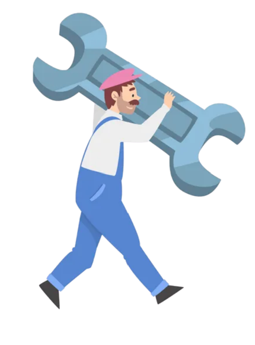

Encouragement Generator
Feeling down? Having Trouble working? Have no fear, for the encouragement generator is here!
Home
Calming Work/Study Music
Link
Click Me

Encouragement will be shown bellow
Still Feeling Down?
Consider going outside, reading a book, eating a healthy meal, or anything else that makes you happy